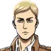
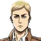
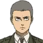
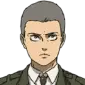

 



EREN JEAGER
Estado: vivo
Edad: 15
Eren jeager hace su primera aparición en esta temporada, se nos presenta como un joven con deseo de libertad y venganza contra los titanes ya que estos destruyeron su pueblo y mataron a su madre. Es el hermano adoptivo de Mikasa Ackerman y el mejor amigo de Armin Arlert Durante esta temporada Eren se une a la milicia para enfentarse a sus enemigos, también descubre que puede transformarse en titan por lo que aprenderá a controlar su nuevo poder para utilizarlo a su favor y a favor de la humanidad.
MIKASA ACKERMAN
Estado: viva
Edad: 15
Mikasa Ackerman hace su primera aparición en esta temporada, se nos presenta como una joven con gran habilidad innata para la pelea, siendo la mejor de su pelotón. Con un profundo deseo de proteger a su hermano adoptivo Eren Jeager, Mikasa hará todo lo que esté a su alcance por defenderlo y salvarlo cada vez que lo necesite.
ARMIN ARLERT
Estado: vivo
Edad: 15
Armin Arlert hace su primera aparición en esta temporada, se nos presenta como un joven con una gran capacidad intelectual, que prefiere evitar el conflicto si es posible. Tras perder a su abuelo, y con el deseo de ver el mar (para ellos una gran masa de agua salada, pues solo lo conocian por libros) decide unirse a la milicia junto con sus amigos Eren y Mikasa, donde demostrará un gran potencial para la estrategia y el discurso.
LEVI ACKERMAN
Estado: vivo
Edad: +30
Levi Ackerman hace su primera aparición en esta temporada, se nos presenta como una persona seria y de caracter firme, con un gran respeto por la disciplina de baja estatura y complexión delgada. Es un soldado de la legión de reconociminto, conocido como "el soldado más fuerte de la humanidad" debido a su gran habilidad en el campo de batalla, su inteligencia y su capacidad de tomar decisiones bajo presión. En esta temporada estará a cargo de vigilar y ayudar a Eren y su poder de transformarse en titan.
ERWIN SMITH
Estado: vivo
Edad: +30
Erwin Smith hace su primera aparición en esta temporada, se nos presenta como el 13° comandante del cuerpo de exploración. Es un hombre sumamente inteligente y un gran lider, que hara todo lo que esté a su alcance por el futuro de la humanidad. Durante esta temporada estará a la cabeza de varias expediciones, teniendo a su cargo a soldados como: Levi, Eren, Armin, Mikasa, Hange, Reiner, entre otros.
HANGE ZOE
Estado: viva
Edad: Desconocida
Hange Zoe hace su primera aparición en esta temporada, se nos presenta como la lider en investigaciones de titanes del cuerpo de exploración mostrando un especial interes en Eren y su habilidad. Se nos muestra como un personaje hiperactivo, alegre y muy apasionada por su trabajo, mostrando una perspectiva distinta al resto respecto a los titanes.
Jean kirstein
Estado: vivo
Edad: 15
Jean kirstein hace su primera aparición en esta temporada, se nos presenta como un joven que se unió a la milicia buscando un puesto como policía en el interior de las murallas para llevar una vida tranquila, sin embargo, tras la muerte de su amigo Marco, decide unirse al cuerpo de exploración. Muestra un gran potencial de lider ya que es capaz de comprender la debilidad y el miedo de los demás.
SASHA BLOUSE
Estado: viva
Edad: 16
Sasha Blouse hace su primera aparición en esta temporada, se nos presenta como una joven amigable y solidaria, con una marcada debilidad por la comida . Nació y se crió en una villa poco poblada y con costumbres de caza, lo que la llevó a desarrollar un gran instinto. Se unió a la milicia y decidió formar parte del cuerpo de exploración.
CONNIE SPRINGER
Estado: vivo
Edad: 15
Connie Springer hace su primera aparición en esta temporada, se nos presenta como un joven algo ingenuo y con una mente no muy aguda, pero su agilidad lo posicionó como uno de los 10 mejores reclutas de su tropa. Se unió a la milicia con el objetivo de formar parte de la policia del interior para enorgullecer a su pubelo, sin embargo terminó optando por formar parte de la legión de reconociminto.
REINER BRAUN
Estado: vivo
Edad: 17
Reiner Braun hace su primera aparición en esta temporada, se nos presenta como un joven con gran habilidad, quedando como el segundo mejor recluta solo por detras de Mikasa. Posee una gran fuerza física y es de constitución solida. Es más habil que muchos de los veteranos.
BERTOLT HOOVER
Estado: vivo
Edad: 16
Bertolt Hoover hace su primera aparición en esta temporada, se nos presenta como alguien tímido, tranquilo y reservado, que sigue a los demás debido a su débil voluntad. Icluso así logró quedar entre los 10 mejores reclutas, mostrando un gran potencial pero con falta de iniciativa.
ANNIE LEONHART
Estado: viva
Edad: 16
Annie Leonhart hace su primera aparición en esta temporada, se nos presenta como una joven experta en el combate cuerpo a cuerpo, destacando por sobre la mayoría de otros reclutas, decidió formar parte de la policía militar. Se nos muestra con una personalidad apática, solitaria y de pocos amigos. Para el final de la temporada se nos revela que ella es la titan hembra, quien había atacado y asesinado a varios miembros de la legión, e intentó capturar a Eren. Tras un enfrentamiento, Annie queda atrapada en un capullo endurecido.
MARCO BOTT
Estado: fallecido
Edad: 16
Marco Bott hace su primera aparición en esta temporada, se nos presenta como un personaje simpatico y agradable, así como un soldado con gran habilidad. Tras quedar entre los 10 mejores de su tropa decide unirse a la policia militar, sin embargo, antes de poder hacerlo un ataque inesperado de los titanes lo obliga a defender la ciudad de Trost donde pierde la vida. Su muerte causa un impacto muy importante en su amigo y camarada Jean.
KRISTA LENZ
Estado: viva
Edad: 15
Krista Lenz hace su primera aparición en esta temporada, se nos presenta como una joven generosa y de buen corazón, dispuesta a ayudar a los demás. Como recluta logró destacar gracias a la ayuda de Ymir, con quien guarda una relación de amistad muy cercana. Es una de los soldados de menor estatura.
YMIR
Estado: viva
Edad: 16
Ymir hace su primera aparición en esta temporada, se nos presenta como una joven directa y abrasiva, antipatica, arrogante e insensible pero con una gran habilidad como recluta.